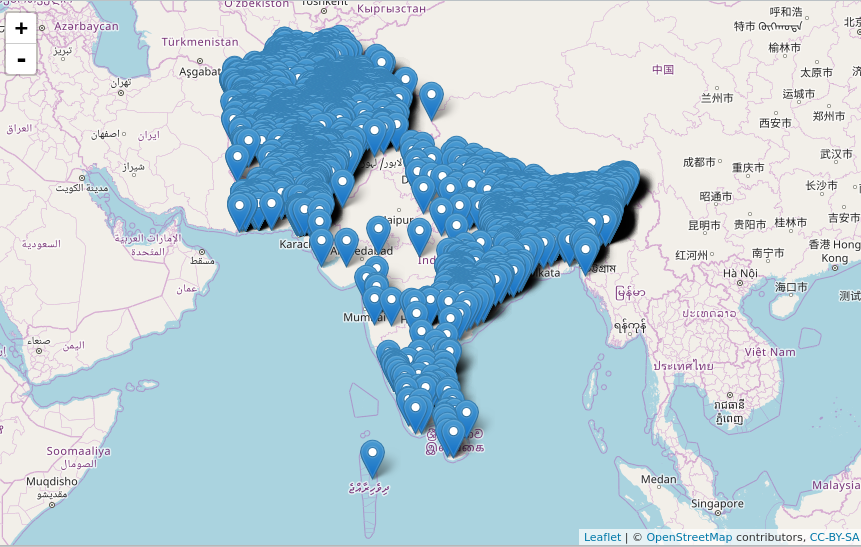

“In many parts of the world, especially Pakistan and Afghanistan, terrorism, war and conflict stop children to go to their schools. We are really tired of these wars. Women and children are suffering.” - Malala Yousafzai
This is an Exploratory Data Analysis (EDA) report on Global Terrorism Database which is an open source repository containing information on terrorist attacks that took place 1970 to 2016 and has 170,000 cases.
The objective of this analysis is to understand the geographical spread of terrorist attacks on a global scale. Before the geographical analysis is done it is important to understand the trend of these attacks through the years and check seasonality. Once it is known where maximum attacks have occurred then different hypothesis will be made which can be further investigated.
## 'data.frame': 170350 obs. of 24 variables:
## $ X : int 1 2 3 4 5 6 7 8 9 10 ...
## $ Year : int 1970 1970 1970 1970 1970 1970 1970 1970 1970 1970 ...
## $ Month : int 7 0 1 1 1 1 1 1 1 1 ...
## $ Day : int 2 0 0 0 0 1 2 2 2 3 ...
## $ Region : chr "Central America & Caribbean" "North America" "Southeast Asia" "Western Europe" ...
## $ State : chr "" "" "Tarlac" "Attica" ...
## $ City : chr "Santo Domingo" "Mexico city" "Unknown" "Athens" ...
## $ attacktype1 : int 1 6 1 3 7 2 1 3 7 7 ...
## $ attacktype1_txt: chr "Assassination" "Hostage Taking (Kidnapping)" "Assassination" "Bombing/Explosion" ...
## $ targtype1 : int 14 7 10 7 7 3 3 21 4 2 ...
## $ targtype1_txt : chr "Private Citizens & Property" "Government (Diplomatic)" "Journalists & Media" "Government (Diplomatic)" ...
## $ natlty1 : int 58 21 217 217 217 217 218 217 217 217 ...
## $ natlty1_txt : chr "Dominican Republic" "Belgium" "United States" "United States" ...
## $ gname : chr "MANO-D" "23rd of September Communist League" "Unknown" "Unknown" ...
## $ gsubname : chr "" "" "" "" ...
## $ gname2 : chr "" "" "" "" ...
## $ gsubname2 : chr "" "" "" "" ...
## $ gname3 : chr "" "" "" "" ...
## $ gsubname3 : chr "" "" "" "" ...
## $ motive : chr "" "" "" "" ...
## $ weaptype1 : int 13 13 13 6 8 5 5 6 8 8 ...
## $ weaptype1_txt : chr "Unknown" "Unknown" "Unknown" "Explosives/Bombs/Dynamite" ...
## $ latitude : num 18.5 19.4 15.5 38 33.6 ...
## $ longitude : num -70 -99.1 120.6 23.7 130.4 ...There has been a significant increase in the number of terror attacks from 2011 onwards.
Globally terrorist attacks have increased by a marigin of ~65% in the period 2011 to 2012 and has steadily increased by ~40% in 2012 to 2013 and 2013 to 2014. Though it has decreased but the attacks are still higher in number when compared to the period of 1998 to 2010.
Since there is no discernable pattern/trend it can be said that Global Terrorism is not influenced by seasons.
First it is important to find the commonly used attack types.
From above it can be claimed that Bombing/Explosion , Armed Assault and Assassination are the more commonly used attack types.
The above figure shows how Bombing/Explosion and Armed Assault attacks have increased over the past few years. It also evident that Bombing/Explosion have contributed to global terrorism the most.
Middle East & North Africa and South Asian Regions have seen the most Bombing/Explosion attacks in the past five years.

First let’s determine common target types for attacks
Business, Government (General), Military, Police and Private Citizens & Property are the most affected by these terrorist attacks.
There are significant number of Military, Police and, Private Citizens and Property targetted by terrorist. Let us plot and see what percentage of these targets were used for attack in regions with high bombing/explosion for the same attack type, in the last five years.
In the past five years 37% of the Global Terrorism targetted Military, Police and, Private Citizens and Property, where Bombing/Explosion or Armed Assault was used for the attack.
EDA on Global Terrorism database claims that certain target types and attack types are more frequently witnessed tools and tactics for terrorism. Though, it does not reveal the exact reason for the rise in terrorist attacks around the world. Further investigations should be made in finding reasons for upsurge in these attacks in certain parts of South Asia, Middle East and North Africa.